Envisioning the future for AI
A data visualization application that helps structural engineers make informed decisions among thousands of generated options.
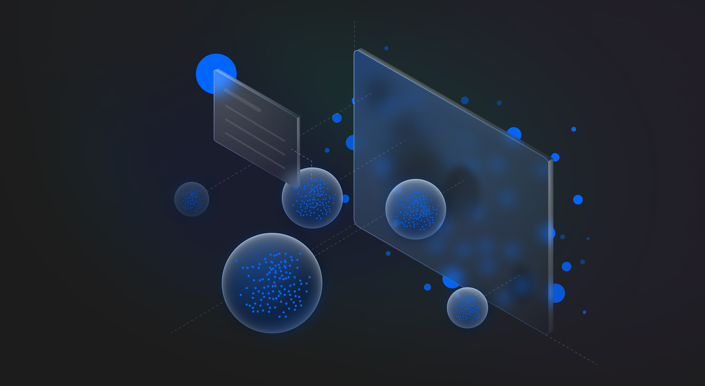
- Context
- Solo passion project
Vision for the future of AI - Domain
- Generative design, Gen AI, Machine Learning, AEC, Architecture & Engineering, Manufacturing
Background
Generative Design for Structural Engineers
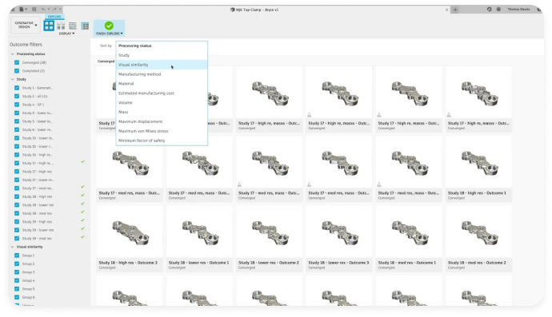
Generative design is an advanced design exploration process. Engineers input performance goals and constraints into the system, which then generates and evaluates numerous design alternatives.
Problem
The intelligence system generated thousands of viable design options
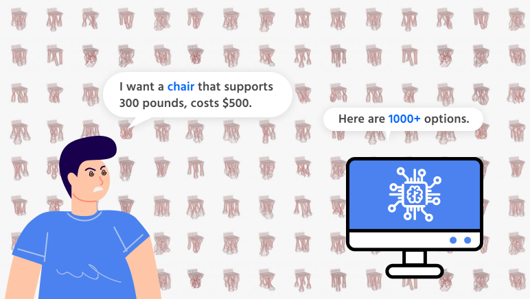
While technically optimized, the sheer volume of objective solutions makes comparison and decision-making difficult. How might we introduce subjective guidance to help engineers efficiently navigate and select from these options?
SOLUTION
OiT, a multi-dimensional dashboard that helps decision-making from thousands of generated options.
Step 1
Requirements clarification
The system automatically analyzes the requirements document to extract key metrics. Users can then adjust and prioritize these criteria, enabling the generation of design seeds based on defined requirements.
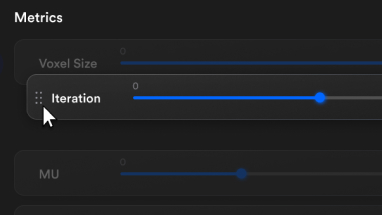
Step 2
Generated design options
An interactive data visualization displaying iteration results, data flow, and the full set of generated design options.
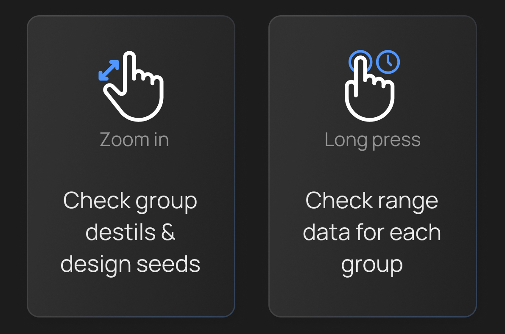
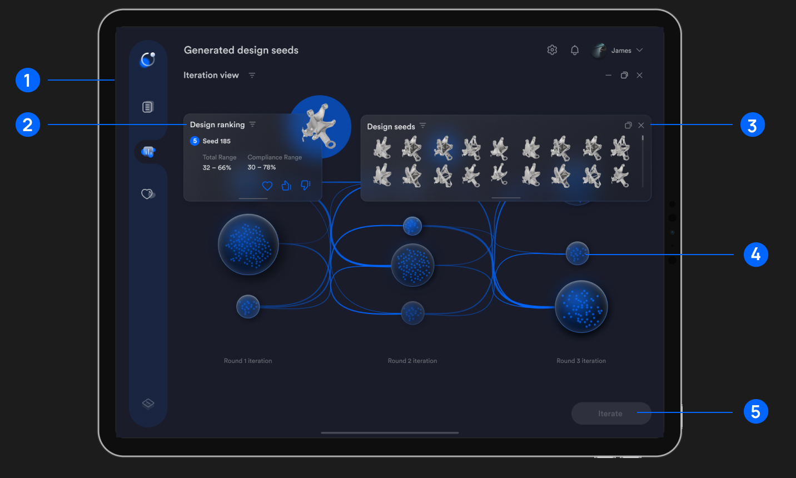
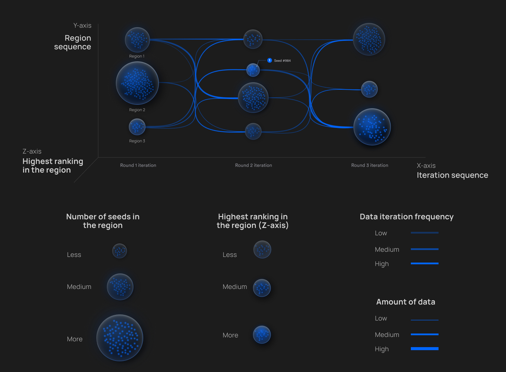
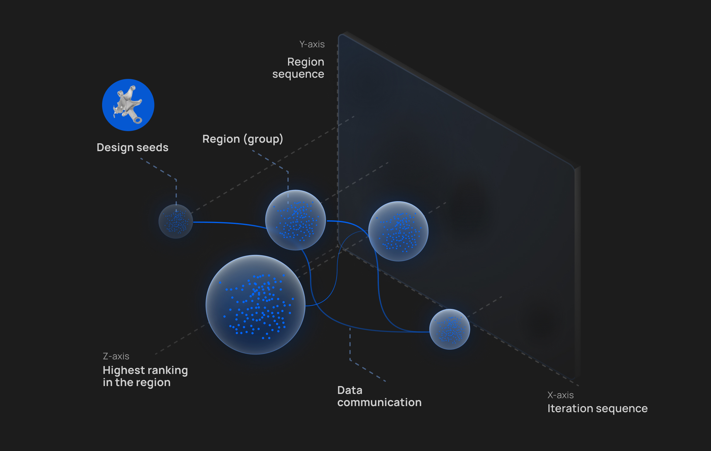
Step 3
Objective filtering based on design metrics
Review detailed information for each design seed, then filter and select those that fall within the defined requirement range.
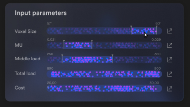
Step 4
Subjective decision based on generative iteration
Based on user-selected seeds, the system initiates a new iteration cycle to generate results that better align with subjective preferences.
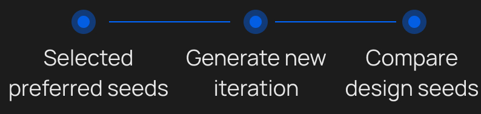
Step 5
Compare among the selected seeds to identify the most suitable option
After narrowing choices through objective filtering and iterative refinement, the shortlisted designs are reviewed and evaluated to support a final selection, or initiate a new iteration cycle.
More Details
Journey map
How do structural engineers make decisions from thousands of generated options?

Workflow
How OiT supports decision-making

Iteration


Final Visuals